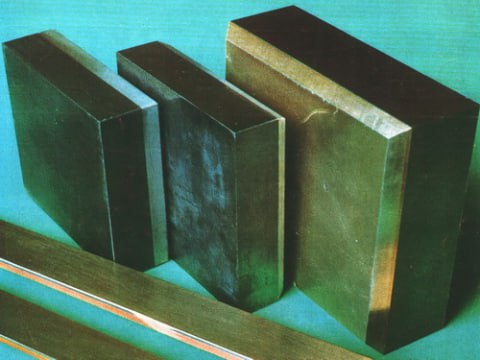

От французского языка «plaquer» - накладывать, покрывать – процесс нанесения на поверхность металлических листов, плит, проволоки, труб тонкого слоя другого металла или сплава термомеханическим способом. Плакированными называются металлы, покрытые каким-либо металлическим или неметаллическим материалом. Схематично процесс плакирования изображен на рисунке 1, плакирующая поверхность получается путём сильного сжатия и пластической деформации (прокатки) соединяемых деталей.
Рис. 1. Схема плакирования листового металла
Длинномерный листовой пакет из нескольких слоев (от 2 до 4) прокатывается через систему вальцов, обеспечивающих необходимое усилие деформирования. Технологические параметры многослойной плакировки зависят от твердости слоев металла и порядка их расположения в пакете.
Плакирование может быть одно- и двусторонним, оно применяется для получения биметалла и триметалла с целью создания антикоррозийного слоя алюминия на листах, плитах, трубах из алюминиевых сплавов, нанесения латунного покрытия на листы стали (вместо электролитического покрытия) и т.д. Созданный материал будет обладать особыми свойствами - высокой твёрдостью и износостойкостью. Плакирование используется при изготовлении и ремонте элементов деталей, подверженных воздействию агрессивных сред (грязи, шлаков, пара) в целях экономии дорогостоящих материалов.
В основе данной технологии лежит метод холодной сварки, при котором соединение металлических деталей происходит путем создания атомарных связей между их поверхностями без взаимного проникновения соединяемых материалов друг в друга.
Плакированием обеспечивается такое сочетание свойств отдельных слоев, что эффективность использования плакированных материалов выше, чем каждого из компонентов их составляющих.
Существует ряд биметаллов (см. ниже раздел Биметаллы и триметаллы) соединения которых чаще всего востребованы в градообразующих отраслях промышленности:
- алюминий и углеродистая сталь;
- алюминий и коррозионностойкая сталь;
- алюминий и титан;
- бронза и сталь;
- хромоникелевая сталь и углеродистая сталь;
- молибден и коррозионностойкая сталь;
- латунь и углеродистая сталь;
- ниобий и углеродистая сталь;
- никель и медь;
- титан и углеродистая сталь и др.
После нанесения плакирующего слоя могут образовываться композиционные материалы разной степени сложности. Например, биметаллы (рис. 2), в которых соединяются два материала.
Рис. 2. Биметаллы
Итоговый материал перенимает свойства обоих, а именно, твердости одного и устойчивости к коррозии другого, или хорошей электропроводности одного и низкой стоимости другого, что значительно расширяет сферу применения таких метариалов.
Структура триметаллов (рис. 3) сложнее: она объединяет три компонента. И сам процесс их “спайки” в этом случае более трудоемок, так как требует высокоточного контроля качества соединения каждого из слоев.
Рис. 3. Триметаллы
Триметаллические системы дают возможность создавать эксклюзивные материалы, имеющие функционал, который нельзя получить иначе.
В целом область применения биметаллов и триметаллов очень широка: от авиационной и автомобильной промышленности до производства бытовой электроники и часовой индустрии. В качестве примера использования полученного материала методом плакирования можно назвать инструментальную отрасль, изготовление режущего инструмента, где один слой будет обеспечивать износостойкость, а другой – прочность. В медицине – это создания бионических протезов и различных имплантов.
Цели плакирования металлов
Существует ряд причин и целей для повышения качества поверхности металла. Перечислим ниже некоторые из них:
Улучшение антикоррозионных свойств
Это необходимо, когда материал работает в среде с повышенной влажностью или вступает непосредственно в контакт с влагой, кислородом, окисью углерода и другими средами. К примеру, при создании некоторых алюминиевых сплавов устойчивость к коррозии падает, но при покрытии защитным слоем чистого алюминия параметр снова растет.
Увеличение износостойкости
Это характерно для деталей, которые работаю на трение. Если их не плакировать, то они быстрее выйдут из строя – поверхность покроется неровностями, шероховатостями, чем детали с нанесенным слоем. Нанесение защитного слоя с антифрикционными качествами значительно улучшит скольжение и, соответственно, увеличит износостойкость изделия.
Снижение стоимости изделия
Для удешевления производства дорогостоящих металлов их покрывают слоем более дешевого сплава, без ущерба высокому качеству и техническим характеристикам дорогого металла. Или на дешевый материал (серебро) при изготовлении ювелирных изделий наносят дорогостоящий металл (золото).
Увеличение твердости и поверхностной прочности
Для увеличения твердости и поверхностной прочности на пластичный материал посредством плакирования наслаивают более прочный металл.
Устойчивость к температурным перепадам
Создание материалов устойчивым к резким перепадам температуры, что значительно продлит срок службы изделия в целом.
Реконструкция деталей после износа
Если на поверхности металлических деталей различного профиля проявились следы незначительного износа и потёртости, то их можно устранить с помощью плакировки, что продлит их срок эксплуатации.
Внешний вид металлических изделий
Иногда плакирование имеет чисто эстетическую функцию – поверхность покрывается слоем металла, который имеет привлекательный вид. Однако обычно эта задача вторична и дополняет, например, свойство защиты от коррозии.
Улучшение электропроводности
Паяемые контакты из меди, стали и латуни покрывают слоем металла (олово, цинк, кадмий, серебро, золото).
Сферы применения
Плакирование широко применяется в таких отраслях как: электротехника, машиностроение, строительство, изготовление художественных изделий и для антикоррозионной защиты, при изготовлении и ремонте деталей или их частей, подверженных воздействию грязи, шлаков, пара. Оно применяется для получения биметалла и триметалла, для создания антикоррозийного слоя на листах, плитах, трубах из алюминиевых сплавов, нанесения латунного покрытия на листы стали. Также используется в ювелирном деле, например, накладка в виде золота накладывается на серебро и применяется при изготовлении монет (сталь, плакированная мельхиором или томпаком; медь, плакированная мельхиором). В корпусах ядерных реакторов используют плакирование нержавеющей аустенитной сталью внутренней поверхности корпуса, так как основной материал корпуса (перлитная высокотемпературная сталь) подвержен коррозии при высоких температурах.
Методы процесса плакирования
Вне зависимости от того, каким методом выполняется совместная пластическая деформация (сжатие) материалов, процесс плакирования материала состоит из следующих типовых операций:
Подготовка поверхности заготовки, включая ее механическую и химическую очистку от внешних загрязнений и окислов;
Фиксация на поверхности заготовки листового, трубчатого или порошкового материала, из которого будет формироваться плакирующий слой. Подготовка пакета листовых металлов либо пакетной ленты для биметалла, триметалла и пр.;
Приложение усилия сжатия, которое вызывает общую деформацию металлов, достаточную для возникновения между ними атомарных связей.
Процесс плакирования можно подразделить на следующие методы:
Пакетная горячая прокатка. На сегодняшний день повсеместно распространен термомеханический способ плакирования. Листы металла собирают и сваривают в многослойный пакет, который обваривают герметичными швами, нагревают до температуры 1450-1550К. Количество слоев зависит от назначения материала и варьируется от 2 до 4 штук. Затем весь пакет подвергают горячей прокатке с величиной обжатия более 60%. В результате термодиффузии на границе раздела металлов получают прочное многослойное изделие;
Холодной прокатка. Используют при получении двух или трехслойных плакированных полос холодной прокаткой (рис. 4).
Рис. 4. Холодная прокатка медь-сталь-медь
Комбинированное литье. В заготовку для слитков устанавливают перфорированные разделительные листы с целью определения положения будущей плоскости соединения между материалами. После этого в форму одновременно заливают два металла. Выполняющий работу оператор контролирует равенство высот жидкого материала. После этого биметаллический слиток прокатывается;
Комбинация жидкого и твердого металла. Твердую плиту укладывают в заготовку для слитка, а затем заливают вокруг нее жидкий металл. Схватывание слоев обеспечивается во время прокатки биметаллической отливки;
Сварка взрывом (СЗ). Методика применяется для создания изделий специального назначения или соединения пар материалов, которые сложно плакировать другими способами (рис. 5). Данный метод позволяет соединить металлы, которые не растворяются друг в друге, при повышенной температуре образуют интерметаллическое соединение и различаются по уровню сопротивления деформации. На поверхность металлического плакирующего листа, расположенного под углом к основе, укладывается взрывчатое вещество (ВВ) с детонатором. Во время детонации ВВ пластины соударяются и возникает струя металла, выходящая из поверхности обеих слоев. Процесс деформации протекает при перепаде давления от нормального атмосферного до давления соответствующее движению фронтов ударных волн.
Рис. 5. Сварка взрывом
Применяется преимущественно для таких пар материалов, соединить которые другими способами плакирования практически невозможно или для изготовления изделий специального назначения. Соединение возможно и между такими металлами, которые не растворяются один в одном, образуют интерметаллические соединения при повышенных температурах или резко различаются по сопротивлению деформации.
Заключение
Наглядное изображение плакированных деталей показано на рисунке 6.
а
б
в
Рис. 6. Изделия с покрытием полученные плакированием
а) нержавеющая сталь покрыта слоем меди;
б) позолоченные акриловые шарики;
в) отливка из алюминиевого сплава покрытая слоем цинка
Что же касается обозначений и указаний на чертеже, то на процесс плакировки распространяются аналогичные ГОСТы, что и для металлических и неметаллических покрытий.
Правила нанесения на чертежах обозначений покрытий устанавливает ГОСТ 2.310-2022 (Единая система конструкторской документации. Нанесение на чертежах обозначений покрытий, термической и других видов обработки, в том числе с использованием аддитивного производства).
Обозначение плакирования на чертежах указывают в технических требованиях (ТТ) после слова «Покрытие». Для этого используют обозначения по ГОСТ 9.306-85 (Единая система защиты от коррозии и старения. Покрытия металлические и неметаллические неорганические. Обозначения) и ГОСТ 9.032-74 (Единая система защиты от коррозии и старения. Покрытия лакокрасочные. Группы, технические требования и обозначения).
У чертежа после обозначения покрытия приводят данные о материалах покрытия (марку и обозначение стандарта или технических условий).
Если покрытие наносят на поверхность сложной конфигурации или на часть поверхности, которую нельзя однозначно определить, то такие поверхности обводят штрихпунктирной утолщённой линией на расстоянии 0,8–1 мм от контурной линии, обозначают их одной буквой и проставляют размеры, определяющие положение этих поверхностей. Запись в ТТ делают такую: «Покрытие поверхности А...».
Вам понравилась статья? Мы очень рады, что да! Добро пожаловать на наши YouTube и Rutube каналы там Вы найдете множество интересного и познавательного видео контента, не забывайте ставить 👍 и подписываться на нас во всех социальных сетях!
Обращайтесь к нам за любой помощью по учебе, к примеру, это может быть: проектирование, оцифровка и перерисовка любых чертежей, деталировка, инженерная графика и начертательная геометрия, трассировка печатных плат любой сложности, моделирование схем электрических принципиальных, 3D визуализация и моделирование деталей простых и сложных.